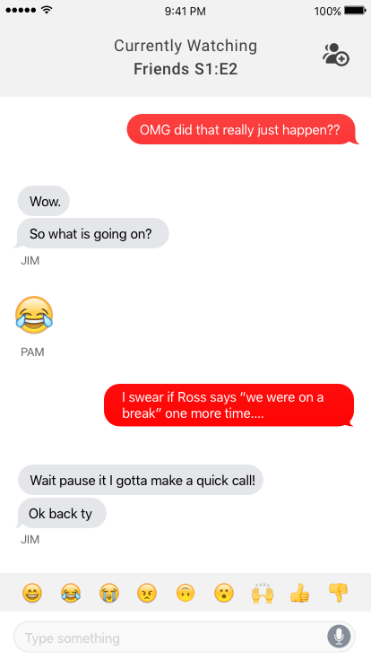
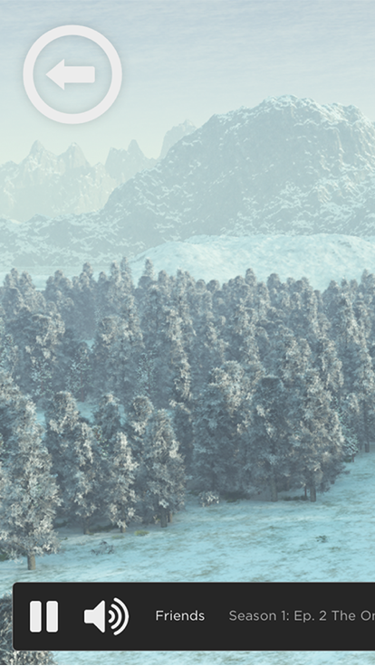

Climb is an analytics tool for professional League of Legends teams to digest game data.
This case studies explores how I tackle the complex problem of information overload on the dashboard design, explore different solutions through iterations, and learn to bridge the gap between design and development.

Pawtty
Sketch, Framer, InVision, Photoshop
Pawtty is a mobile app concept that creates simplified solutions for dog owners to track and predict feeding and walking times for their dogs.
I identify and design features for Pawtty based off of market and user research. In this case study, I practice simplifying a complex tracking process while following iOS HCI guidelines.
I identify and design features for Pawtty based off of market and user research. In this case study, I practice simplifying a complex tracking process while following iOS HCI guidelines.


Netflix "Watch Together"
Sketch, Photoshop
In this case study, I design a solution to for Netflix's lack of social interaction between
users who are separated by distance.
I explore different solutions to drive the sense of community through in-app features and a mobile companion app, while practicing interaction design for multiple platforms.
I explore different solutions to drive the sense of community through in-app features and a mobile companion app, while practicing interaction design for multiple platforms.

